Warm-up Exersizes

 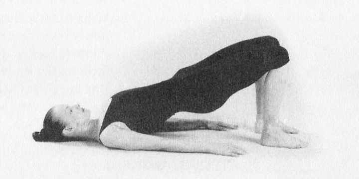
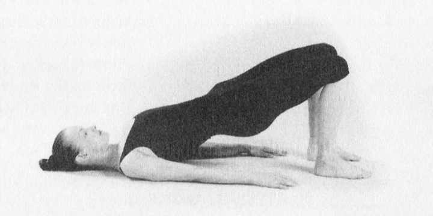


 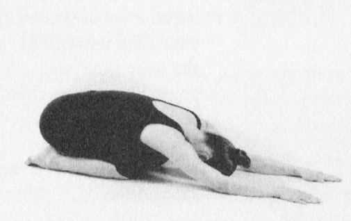
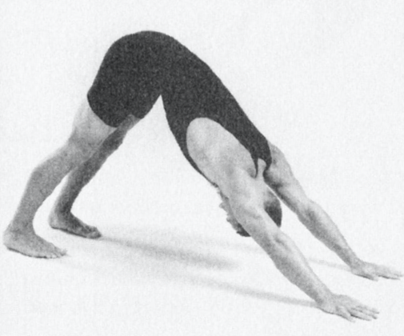
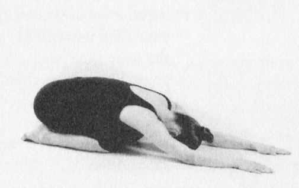
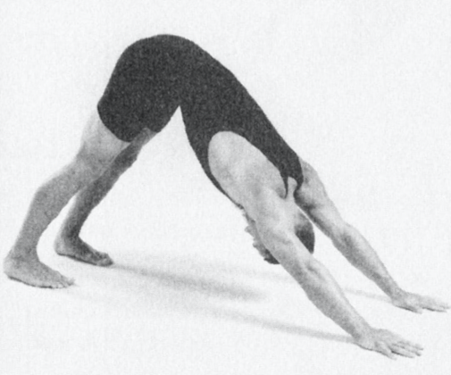


Start with the warm-up exersizes, then move on to the five rites.
(It's best to do this in the morning.)
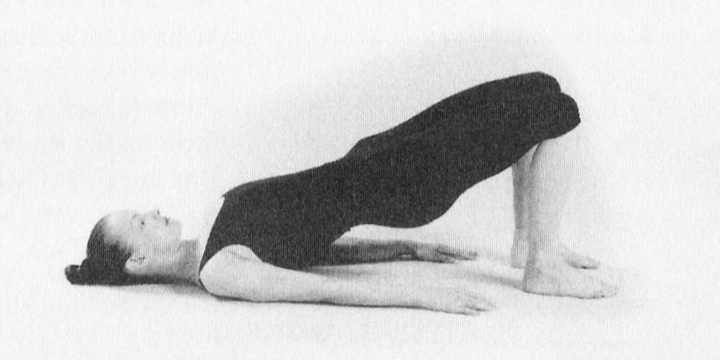
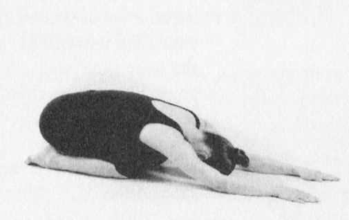
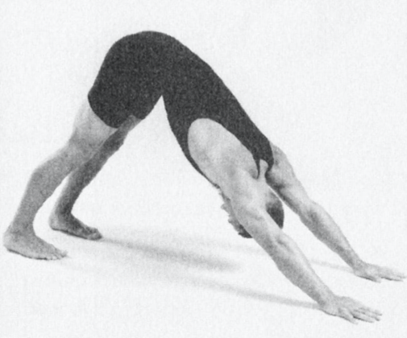

 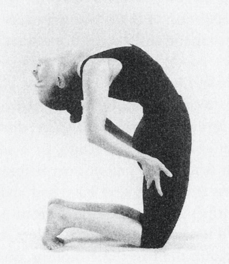
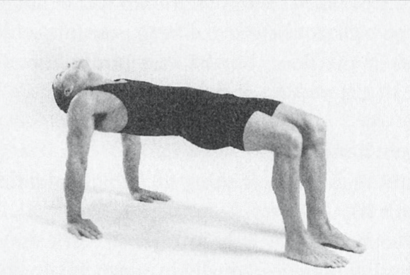
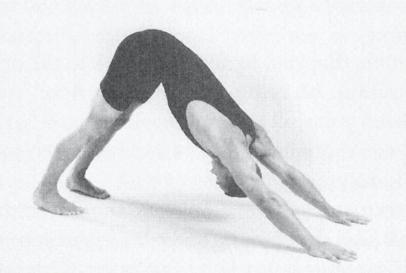
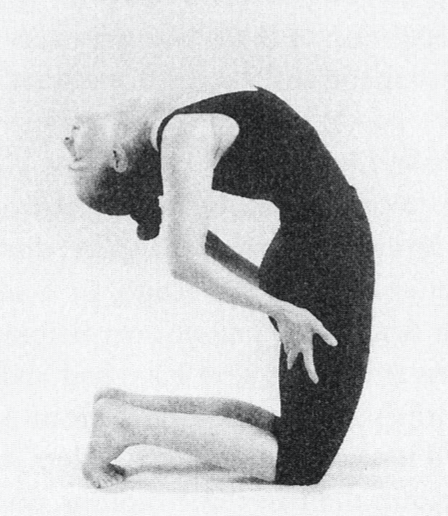
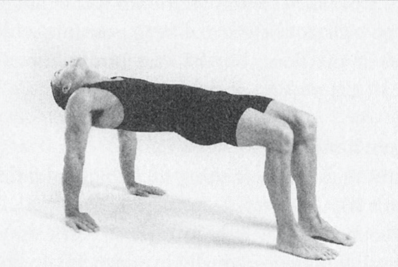
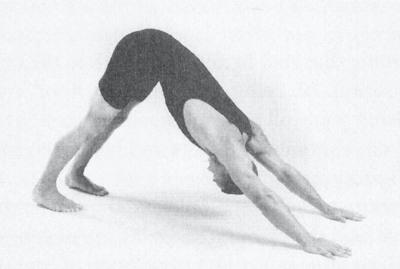
It's useful to spend 5 to 10 minutes relaxing after completing all five of the rites. Try the following technique: Lie flat on the floor, on your back, with your eyes closed. Do the body scan with abdominal breathing warm-up. This relaxation period, characterized by deep, slow, easy breathing, releases any tension that may have built up as you exercised, reduces the possibiliry of any residual stiffness, and maximizes the benefits that have accrued to all the nerves, glands, and organs ofyour body. It gives the chakras time to balance their energy and gives the mind an opportunity to come into a calm state that can influence the rest of your day.